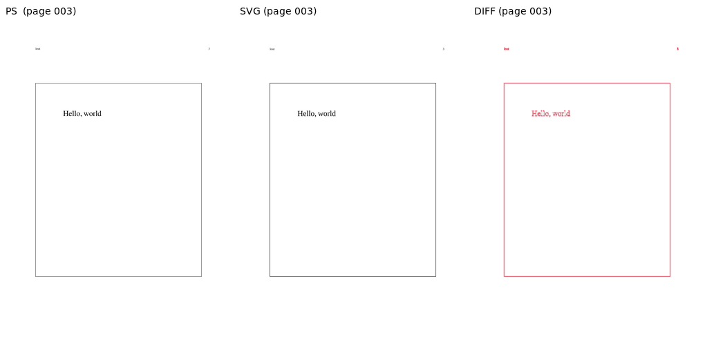
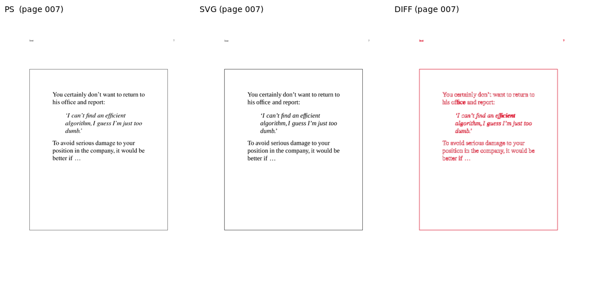
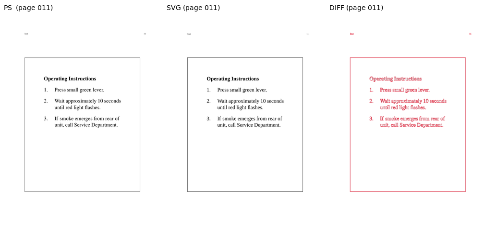
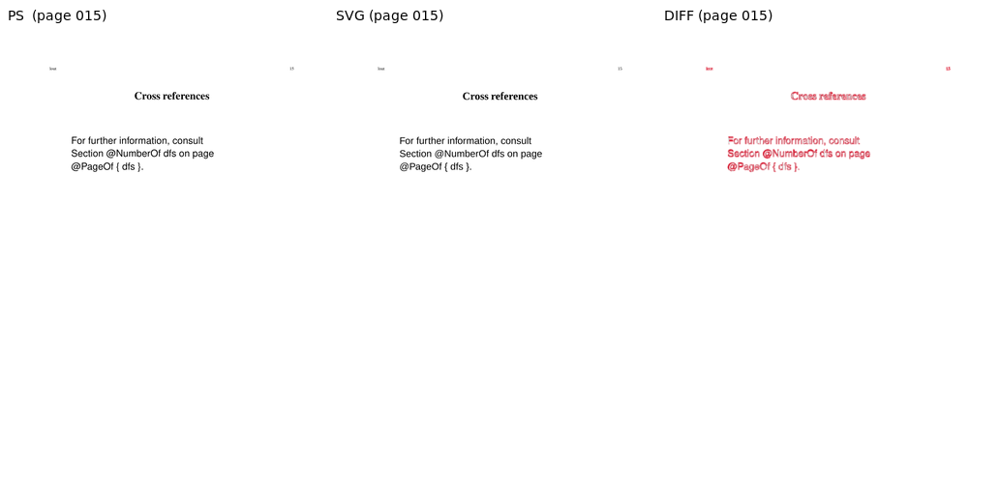
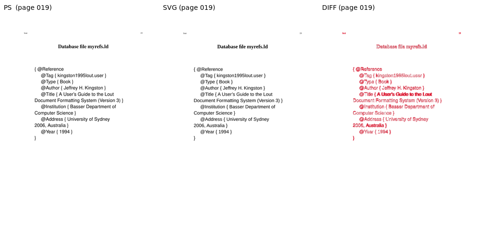
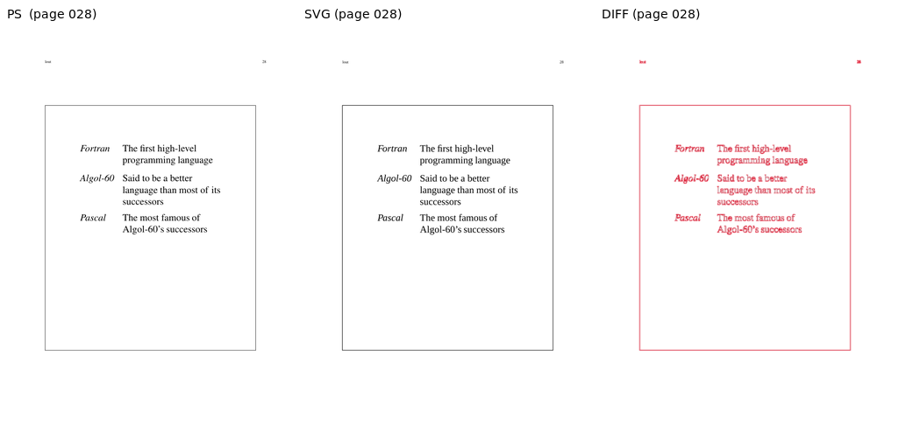
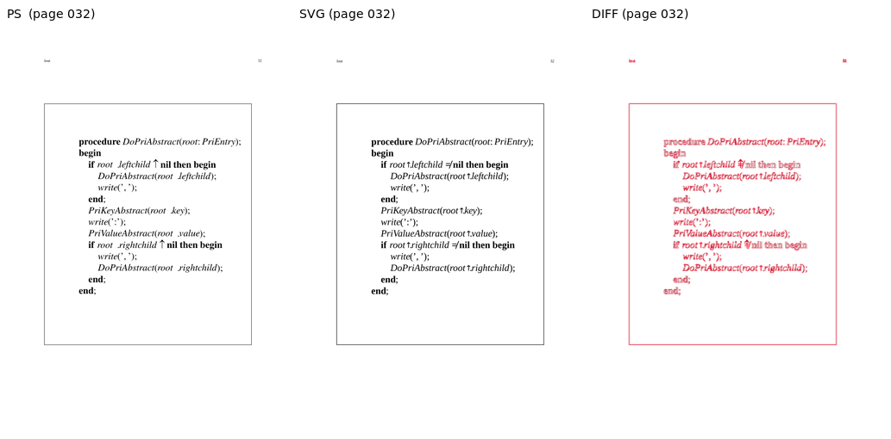
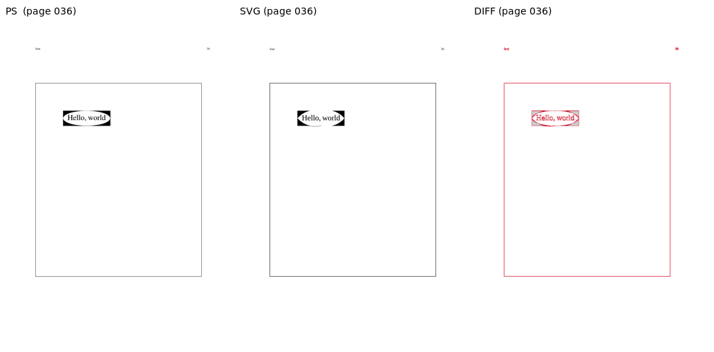
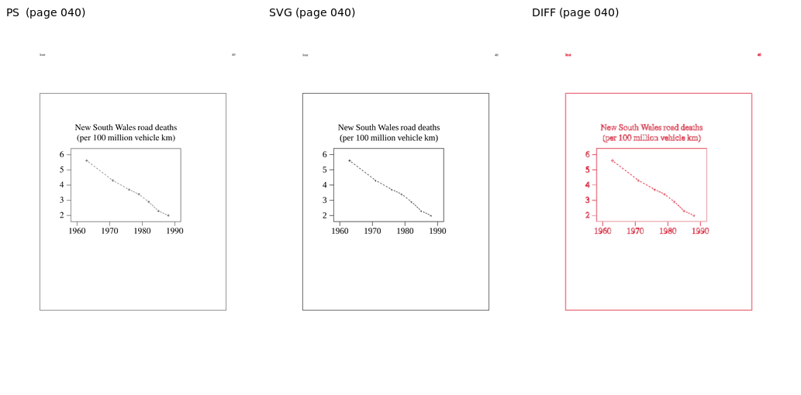

Sampled pages, rendered via both the PostScript pipeline (lout + ps2pdf + pdftoppm) and the SVG pipeline (lout -G via z53.c + rsvg-convert). AE = ImageMagick absolute-error pixel count at 5% fuzz; SSIM is scikit-image structural_similarity on luminance (1.0 = identical).
| Page | W | H | Diff px | Diff % | SSIM | Verdict |
|---|---|---|---|---|---|---|
| 003 | 827 | 1170 | 6015 | 0.62 | 0.9946 | OK |
| 007 | 827 | 1170 | 18153 | 1.88 | 0.9833 | OK |
| 011 | 827 | 1170 | 16276 | 1.68 | 0.9854 | OK |
| 015 | 827 | 1170 | 6825 | 0.71 | 0.9947 | OK |
| 019 | 827 | 1170 | 24466 | 2.53 | 0.9740 | OK |
| 024 | 827 | 1170 | 14835 | 1.53 | 0.9831 | OK |
| 028 | 827 | 1170 | 16733 | 1.73 | 0.9845 | OK |
| 032 | 827 | 1170 | 25615 | 2.65 | 0.9731 | OK |
| 036 | 827 | 1170 | 7556 | 0.78 | 0.9910 | OK |
| 040 | 827 | 1170 | 13982 | 1.45 | 0.9860 | OK |








